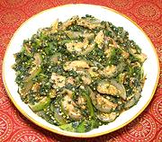

|
Eggplants with AmaranthIndia - Andhra Pradesh - Thota kura-Poluru Vankaya Kura | ||||
| Serves: Effort: Sched: DoAhead: |
4 side *** 40 min Yes |
A flavorful curry of eggplant and greens very popular in Andhra Pradesh. It works well as a side dish or as a light vegetarian main dish with rice. The green and white eggplants we know as "Thai" are also grown in Andhra. | |||
|
10 1 1/4 4 ------ 1 8 1/4 1/4 ------ 1/2 1/8 l/2 |
oz # in --- cl t t --- T t t |
Amaranth Greens (1) Thai Eggplants (2) Ginger root Chili, green (3) -- Seasonings Garlic Curry Leaves (4) Cumin seeds Mustard seeds (5) --------- Oil Turmeric Salt |
PREP - (25 min)
|